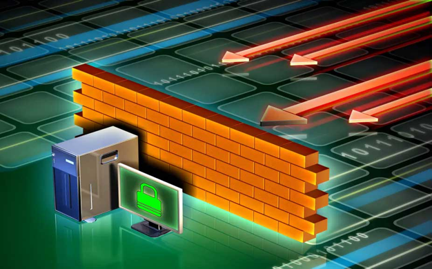

O que é Firewall?
A palavra firewall tem estado cada vez mais comum no nosso cotidiano, ainda mais agora que a segurança digital
está dia após dia mais em evidência. Você certamente já deve estar familiarizada com ela, mas sabe o que é o
firewall ou o que ele faz?
Na informática, os firewalls são aplicativos ou equipamentos que ficam entre um link de comunicação e um
computador, checando e filtrando todo o fluxo de dados. Esse tipo de solução serve tanto para aplicações
empresariais quanto para domiciliar, protegendo não só a integridade dos dados na rede mas também a confidencialidade deles.
Origem do Firewall
O conceito de Firewall começou a ser utilizado no final da década de 80, quando roteadores separavam pequenas redes.
Assim, separadas, as redes poderiam instalar aplicativos e gerenciar seus recursos da forma lhes fosse conveniente.
Caso essas aplicações apresentassem algum problema congestionando a rede, as redes dos demais segmentos não seriam afetadas.
Os primeiros firewalls que trabalhavam a segurança de redes surgiram no início dos anos 90. Eram mecanismos que lidavam
com um pequeno conjunto de regras, como: Alguém da rede A pode acessar a rede B, ou alguém da rede C não pode acessar a
rede B. Esses firewalls eram efetivos, mas bastante limitados.

A segunda geração de firewalls foi mais desenvolvida, pois usavam filtros de pacotes e de aplicativos (proxy) além de trazer
uma Interface gráfica para gerenciar as “regras”. Estes dispositivos eram conhecidos como Bastion Host (computador que é
exposto totalmente a um ataque, sendo colocado no lado da DMZ - Demilitarized zone -, desprotegido por um firewall ou por
filtros de roteadores. Firewalls ou roteadores que provêm acesso de controle ao perímetro da rede, são considerados Bastion Hosts).
Jeff Mogul, o criador do Firewall
A primeira proposta de firewall, ou filtro de pacote, surgiu em 1989 por Jeff Mogul da Digital Equipament Corp (DEC),
marcando, portanto, a primeira geração.
Parede de fogo
Assim como a metáfora por trás do nome sugere, firewall é uma barreira de proteção que ajuda a bloquear o acesso de conteúdo
malicioso, mas sem impedir que os dados que precisam transitar continuem fluindo. Em inglês, “firewall” é o nome daquelas
portas antichamas usadas nas passagens para as escadarias em prédios.